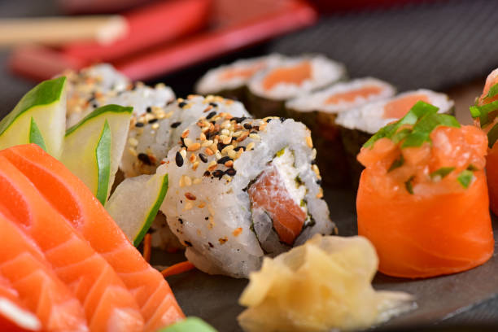
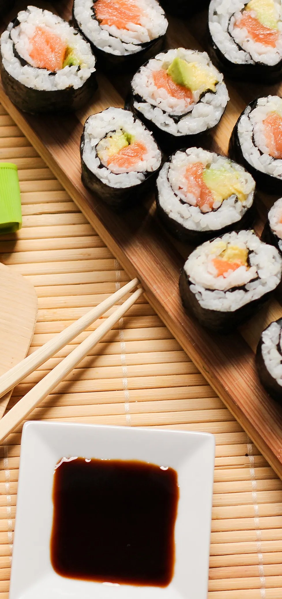
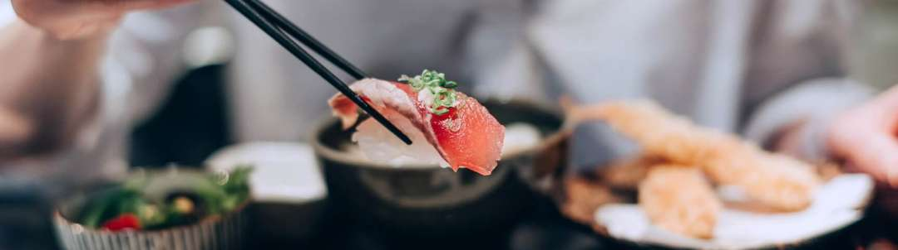

Cocina Nikkei
Arroz estilo nikkei acompañado de langostinos thai en salsa de puerros. Risotto de Quinoa Con cebolla, ají morrón, verdeo y ciboulette. Pesca Blanca o Salmón con Risotto de Quinoa Pesca blanca o Salmón a la plancha con verdeo y ciboulette acompañado de risotto de quinoa. Risotto Negro y Langostinos Tausi Risotto con salsa de ají amarillo y harusame. Wok Arroz Thai con vegetales. Opcional con Salmón, Carne Vacuna o Pollo


